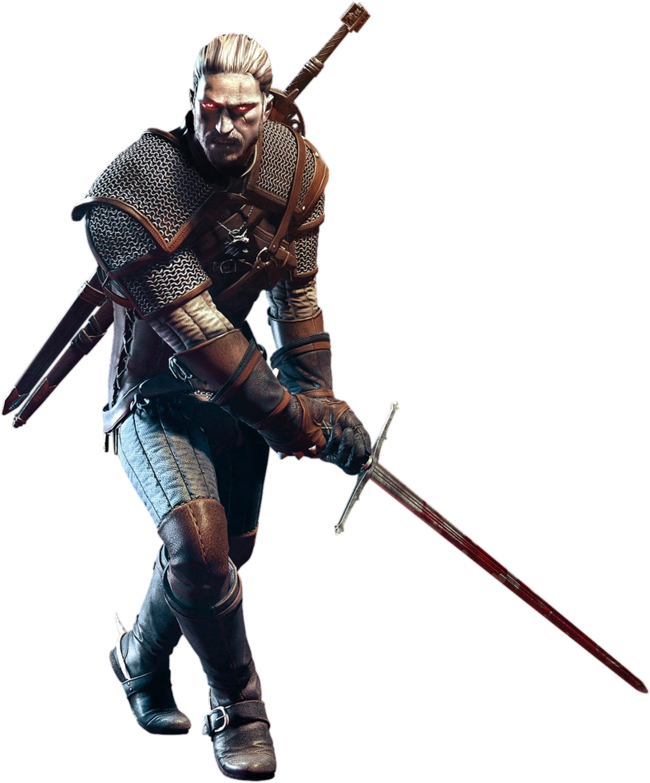
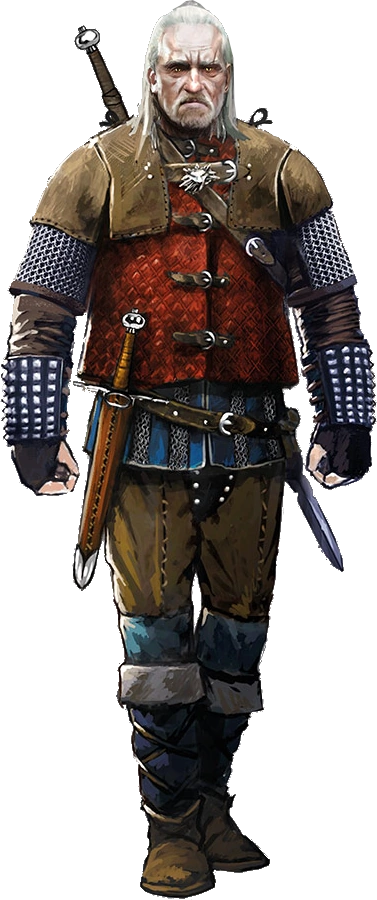
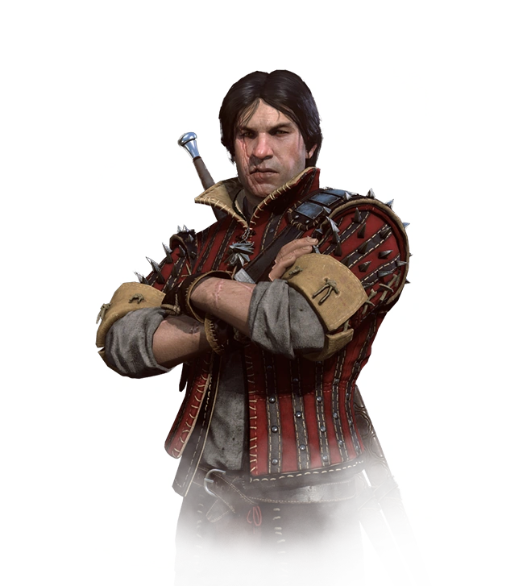
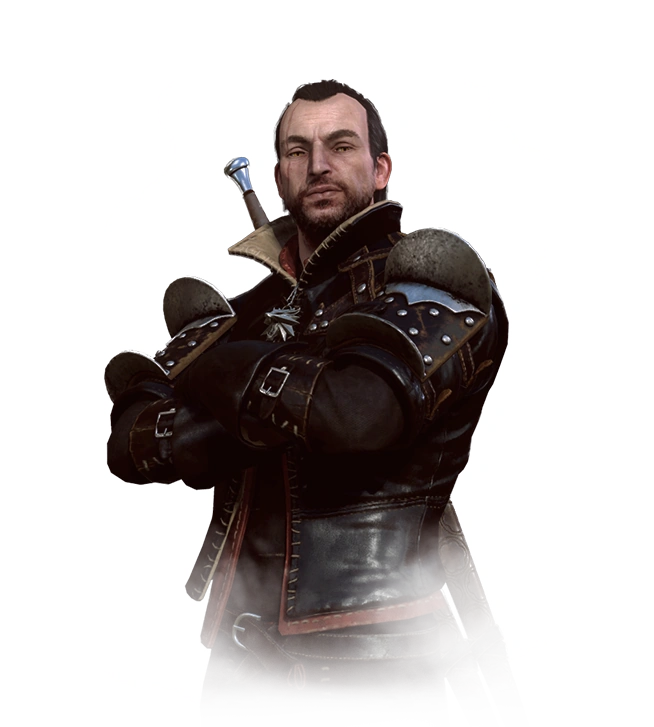
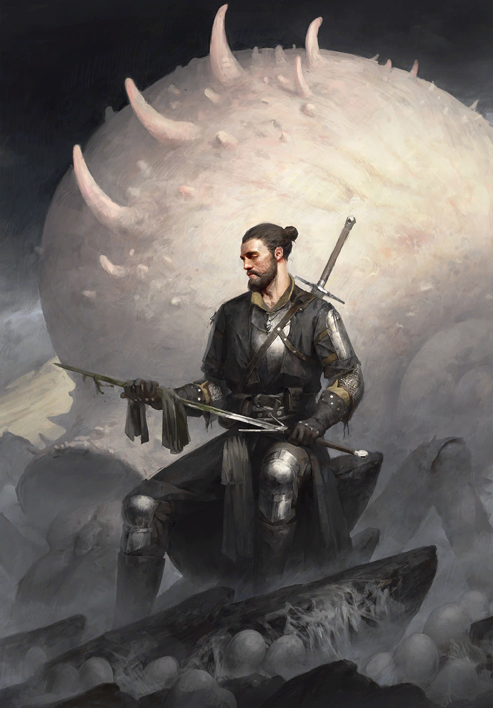
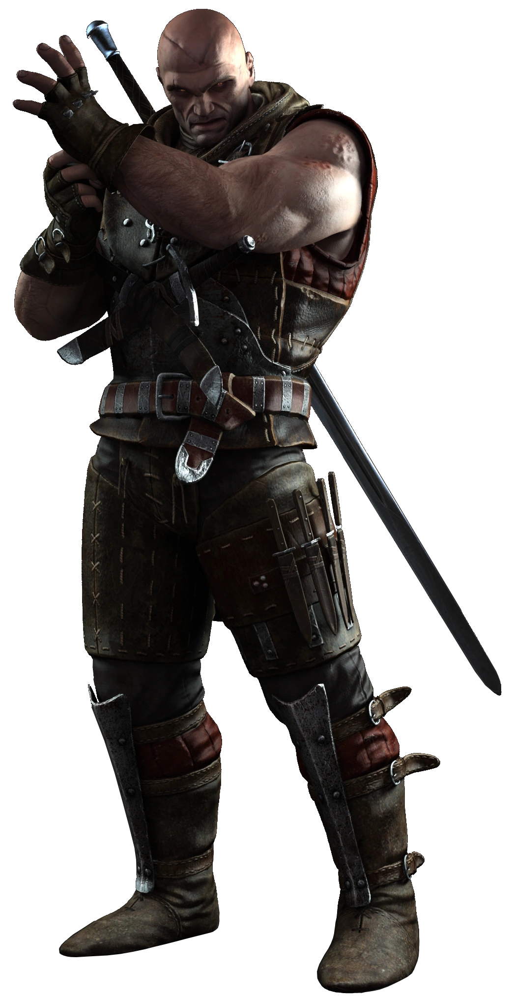
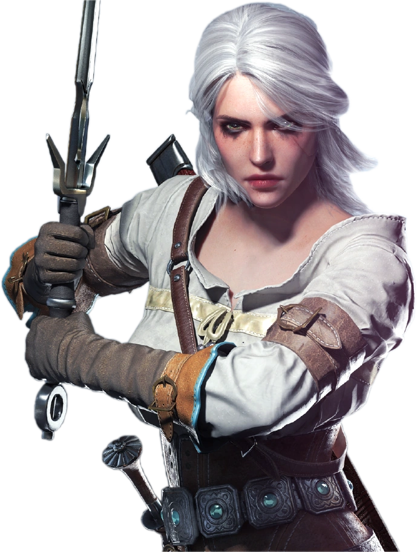

 Геральт из Ривии, прозванный Белым Волком и Мясником из Блавикена (ориг. Geralt z Rivii) — главный герой литературной саги и протагонист последующих игр, ведьмак из Школы Волка, профессиональный охотник на монстров, один из лучших фехтовальщиков Севера. Имеет романтический интерес к двум чародейкам: Йеннифэр из Венгерберга и Трисс Меригольд. Его лучшими друзьями помимо ведьмаков из своей школы являются бард по имени Лютик, краснолюд Золтан Хивай и высший вампир Эмиель Регис.
«Зло — это зло... Меньшее, большее, среднее — без разницы, пропорции условны, а границы размыты. Я не святой отшельник, не только одно добро творил в жизни. Но если приходится выбирать между одним злом и другим, я предпочитаю не выбирать вовсе»
— Геральт из Ривии
 Весемир (ориг. Vesemir) — второстепенный персонаж литературной саги, а также игр Ведьмак и Ведьмак 3: Дикая Охота, старейший, самый опытный и уважаемый ведьмак из Школы Волка, являвшийся её мастером и хранителем традиций Цеха. Являясь одним из немногих ведьмаков, переживших в прошлом нападение на Каэр Морхен, он выступал в роли наставника и практически отца легендарного Геральта из Ривии и ряда других охотников на чудовищ. Обладал широкими познаниями в области фехтования и монстрологии, что, главным образом, и преподавал своим ученикам.
«Да, Весемир был действительно стар. Кто знает, не старше ли, чем Каэр Морхен. Но он шёл к ней быстрым, энергичным и пружинистым шагом, его рукопожатие было крепким, а руки сильными…»
— «Кровь эльфов»
 Эскель (ориг. Eskel) — второстепенный персонаж литературной саги, а также игр Ведьмак и Ведьмак 3: Дикая Охота, ведьмак из Школы Волка и друг детства Геральта из Ривии. Является опытным и искусный охотником на чудовищ, ничем не уступающим Геральту, однако он не снискал такую славу, как его коллега по цеху. Кроме того, они с Белым Волком одного возраста и вместе прошли Испытание Травами, жестокий отбор и обучение, после чего стали ведьмаками.
«Я простой ведьмак. Не сражаюсь с драконами, не братаюсь с королями, не сплю с чародейками»
— Эскель
 Ламберт (ориг. Lambert) — второстепенный персонаж литературной саги, а также игр Ведьмак и Ведьмак 3: Дикая Охота, самый молодой из выживших ведьмаков Школы Волка.
«И самый младший из ведьмаков в Каэр Морхене — Ламберт, как всегда, с неприятной ухмылкой на лице»
— «Кровь эльфов»
 Койон из Повисса (ориг. Coën) — второстепенный персонаж литературной саги, ведьмак из Школы Грифона, зимовавший в Каэр Морхене и участвовавший во Второй Северной войне на стороне Севера.
«Нет такого понятия, как честный бой. В бою используют любое преимущество и любую возможность»
— Описание Койона в «Гвинте»
 Лето из Гулеты по прозвищу Убийца королей (ориг. Letho of Gulet) — главный антагонист игры Ведьмак 2: Убийцы королей и второстепенный персонаж игры Ведьмак 3: Дикая Охота, ведьмак из Школы Змеи, охотник за головами и лидер Убийц королей.
«Ведьмаки никогда не умирают в постели»
— Лето из Гулеты
 Принцесса Цирилла Фиона Элен Рианнон, более известная как Цири (ориг. Ciri) — один из центральных персонажей литературной саги и второй протагонист игры Ведьмак 3: Дикая Охота, дочь цинтрийской принцессы Паветты и князя Дани, внучка Калантэ и Рёгнера из Эббинга, королей Цинтры, дитя Старшей Крови, потомок Лары Доррен и Крегеннана из Лёда.
«Знаешь, когда сказки перестают быть сказками? Когда люди начинают в них верить»
— Описание карты Цири: натиск в «Гвинте»